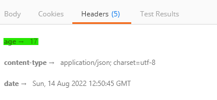

Daily Knowledge Drop
Built in output caching support is being introduced with .NET 7, providing caching functionality for minimal api responses. The functionality is highly configurable allowing for fast, yet accurate responses from a minimal api.
Endpoints
Default endpoint
In these examples, a simple minimal api endpoint will be used as a base, which returns the current datetime when invoked:
app.MapGet("/date", () =>
{
return DateTime.Now;
});
Default caching
Let's start by adding default caching to the endpoint. There are basically 3 steps to be performed to configure output caching (these are the same three steps that apply to most API functionality):
Configure the
dependency injection container:builder.Services.AddOutputCache();Configure the api
middleware pipeline:app.UseOutputCache();Define the endpoint, and
apply the output cache functionality to the endpoint:app.MapGet("/datedefaultcache", () => { return DateTime.Now; }).CacheOutput();
Invoking the /date endpoint will always result in a new return value, however invoking /datedefaultcache a cached value will be returned (apart from the first time it is invoked). By default, the response is cached for 60 seconds.
Inspecting the response headers (by using a tool like Postman, for example), one can see the age of the cached response (in seconds) is included:

By default, once the cache is 60 seconds old, it expires and the next request to the endpoint will generate a new cache.
Caching policy
It is also possible to define one or more cache policy which allows for finer control of the behavior over the caching mechanism. A policy can either be defined as part of the AddOutputCache call, and then applied to one or many endpoints (as is shown in the example immediately below), or defined when applying caching to a specific endpoint (as shown in an VaryBy example further down).
Define the
caching policy:builder.Services.AddOutputCache(options => { options.AddPolicy("ignore-cache", p => p .With(ctx => !ctx.HttpContext.Request.Headers.ContainsKey("ignore-cache")) ); });This policy looks for the presence of a header called ignore-cache and only applies the cache policy if the header is not present (irrespective of the header value)
Apply the policyto an endpoint:// option to ignore app.MapGet("/dateignorecache", () => { return DateTime.Now; }).CacheOutput("ignore-cache");Invoking this endpoint will result in default caching behavior, unless a header named
ignore-cacheis included in the request, in which case caching will be ignored.
Caching VaryBy
Another feature which can be leveraged, is the ability to cache by a specific value. The built in options available are to cache:
- By query
- By header
- By value
In the below example, the output is cached by the query string value 'timezone':
app.MapGet("/datetimezone", (string? timezone) =>
{
// insert some logic to get the correct datetime
// based on the timezone
return DateTime.Now;
}).CacheOutput(p => p.VaryByQuery("timezone"));
When the endpoint is invoked with a specific timezone (/datetimezone?timezone=CAT for example), the output will be cached while the same timezone query string is provided. If another timezone is provided (/datetimezone?timezone=GMT for example), the same cache used for CAT is not applied and a new cache will be generated specific for GMT. The cache will vary by a query string value. The same logic can be applied to a header value, or any other custom value.
Evicting cache
In some instances it might be required to manually invalidate a cache if we know the content is no longer valid. The below example is very simple (for demo purposes), but the same mechanism can be extended for more elaborate use cases:
The first step is to tag the output cache:
app.MapGet("/datetimetag", () =>
{
return DateTime.Now;
}).CacheOutput(t => t.Tag("current"));
Here when the /datetimetag endpoint is called, the output cache is tagged with the name "current".
The implementation of IOutputCacheStore (configured with dependency injection using the AddOutputCache method) can then be injected where and when required to evict (invalidate) a cache using the tag.
In this example, another endpoint is defined which will evict the cache for the /datetimetag endpoint:
app.MapGet("/datetimeclear", (IOutputCacheStore cache) =>
{
// evict the cache tagged with "current"
cache.EvictByTagAsync("current", default);
});
Notes
Another very useful and easy to configure feature coming with .NET 7 (along with rate limiting, for example) - making minimal api's even more powerful and bringing it closer to parity with the more traditional MVC (controllers) approach.
References
Nick Chapsas - The NEW caching you should be using in .NET 7
Daily Drop 155: 07-09-2022
At the start of 2022 I set myself the goal of learning one new coding related piece of knowledge a day.
It could be anything - some.NET / C# functionality I wasn't aware of, a design practice, a cool new coding technique, or just something I find interesting. It could be something I knew at one point but had forgotten, or something completely new, which I may or may never actually use.
The Daily Drop is a record of these pieces of knowledge - writing about and summarizing them helps re-enforce the information for myself, as well as potentially helps others learn something new as well.